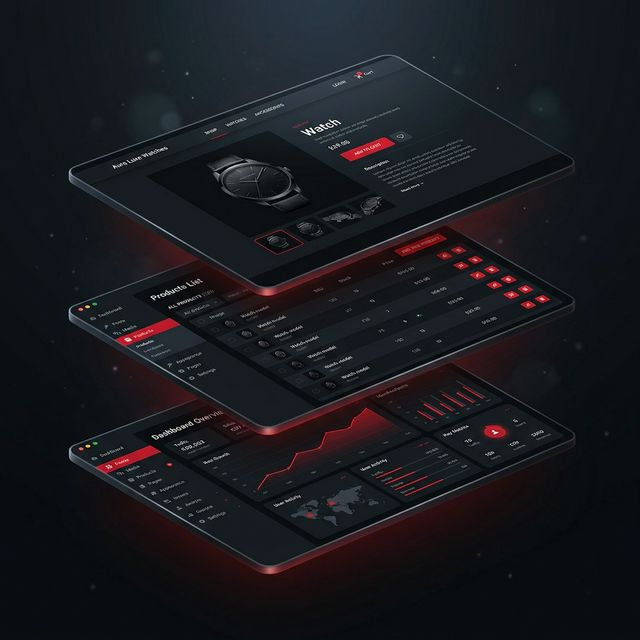

ปลดล็อกข้อจำกัดเดิมๆ เราออกแบบและพัฒนา WordPress ที่รองรับทราฟฟิกมหาศาล และจัดการสินค้าระดับหมื่นรายการได้อย่างลื่นไหล

โครงสร้าง WooCommerce ที่ปรับแต่งมาเพื่อจัดการสินค้ามากกว่า 10,000+ รายการ โดยที่เว็บยังโหลดไว ด้วยระบบ Caching และการ Query ฐานข้อมูลที่ได้รับการปรับแต่งอย่างละเอียด
ออกแบบหน้า Landing Page สำหรับธุรกิจองค์กรและเวิร์กชอป ที่เน้นหลักจิตวิทยาและ UX/UI เพื่อปิดการขาย ตั้งแต่ Hero Section ไปจนถึง Social Proof และ CTA ที่ไม่อาจปฏิเสธได้
โหลดเร็วกว่าด้วยเทคนิค Caching ระดับเซิร์ฟเวอร์ Code Minification และการปรับขนาดรูปภาพอัตโนมัติ พร้อม Lazy Loading เพื่อให้ Core Web Vitals ผ่านเกณฑ์ Google
วางโครงสร้าง SEO ตั้งแต่ระดับ Technical (Site Structure, Schema Markup, XML Sitemap) ไปจนถึงการวางกลยุทธ์คีย์เวิร์ดที่ตรงกับกลุ่มเป้าหมายธุรกิจของคุณ
ปรึกษาความต้องการของธุรกิจคุณกับเรา เราจะออกแบบโซลูชัน WordPress ที่เหมาะสมที่สุด